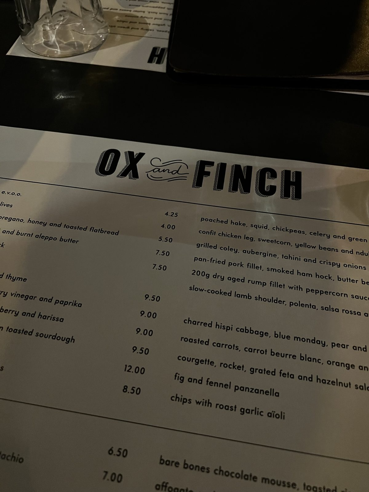
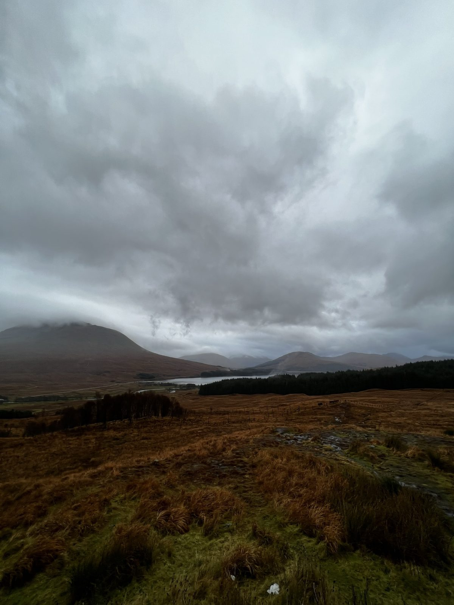
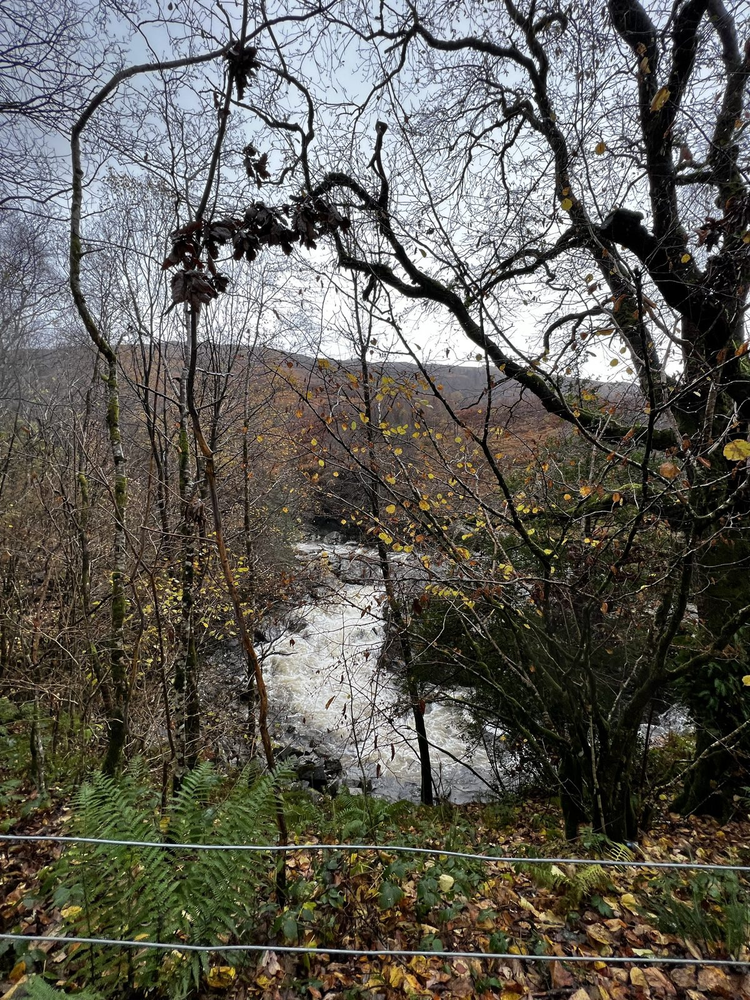
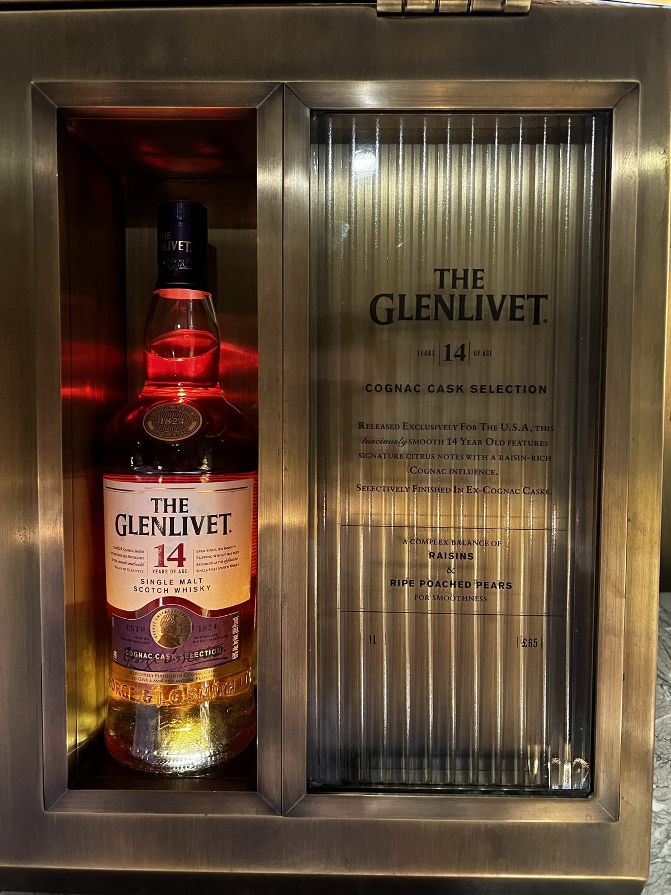

13-18 Nov / Glasgow - Highlands - Inverness - Stirling
This is where the trip became colder, moodier, and more cinematic.
Scotland gave the route its strongest atmosphere: fallen leaves, dark roads, low clouds, whisky rooms, quiet monuments, and a landscape that somehow looked better the greyer it became.
Back to UK and Scotland trip
Glasgow
Glasgow felt like the trip lowering its voice.
Glasgow eased us into Scotland in a less postcard-like way: warm tables, pub menus, local beer, colder air outside, and the feeling that the trip had started moving into a slower register.
It was not the chapter with the loudest view, but it worked as a soft landing before the Highlands. London had city movement; Glasgow felt more grounded, more indoor, and a little more lived-in.



Glasgow is better here as texture than spectacle: wet paths, bare trees, and one warm table before the route turns colder.
Highlands road
The best frame was the road itself.
The Highland stretch had the kind of scenery that makes a trip feel larger than its itinerary: wet roads, low clouds, brown grass, and mountains that do not need much explanation.
It was not sunny-pretty. It was better than that: heavy, dramatic, and a little lonely in the best way.



The Highlands did not need perfect weather. The grey made the whole chapter stronger.
Cairngorms
Warm interiors after the cold outside.
The whisky-room photos add a welcome change in texture: dark green walls, glowing shelves, bottle displays, and the feeling of stepping into somewhere warmer after too much wind.
This part worked well because it was such a clear contrast. Outside was cold and wide; inside was darker, warmer, and much more intimate.



Inverness and Stirling
Stone monuments and wide skies carried the north.
The later Scotland stretch feels quieter in memory: open sky, longer distances, stone stops, and the sense of moving through colder places before Edinburgh brought the city back in.
By this point the trip was less about one perfect attraction and more about how the northern scenery kept changing its tone.
Personal take: this was the strongest travel atmosphere of the UK/Scotland route. The scenery did not feel polished, but it felt alive.
For the public version of this draft, I am keeping this chapter more place-led than portrait-led. It makes the page feel cleaner and keeps the trip personal without making it too exposed.